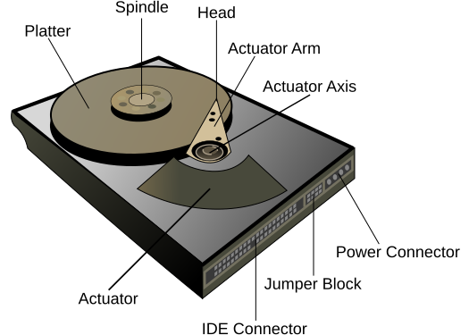
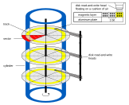
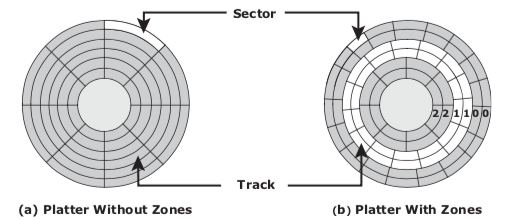

Hard disk drives encased with controller board and power / data connectors.
1 or more aluminimum platters mounted on spindle separated by a small gap.
Spindle attached to motor spins platters at constant speed. (Usually 5400, 7200 or 10000 RPM)
Platters (2-sided) coated with magnetically susceptible material.
Heads mounted on an actuator arm, moves all heads simultaneously.
Heads are separated from the platter by a small air gap known as the “head flying height” which is maintained by a cushion of air.
Before stopping the platter’s rotation, the heads are moved towards the “landing zone”.
If the heads contact the disk otherwise it is known as a “head crash” and risks loss of data.

concentric rings on each platter. Because of multiple platters, each with two sides, normally refer to cylinder and head to uniquely identify a track:
identical set of tracks on both surfaces of all drive platters, numbered from zero at outer edge.
head identifies which platter and side that the track identified by the cylinder is located within.
subdivisions of tracks, each numbered from 1.
In order to be able to locate our data, we need a way to address sectors:
is a 3-part addressing scheme, where the head identifies the platter and side, the cylinder picks the track and the sector is with reference to the track. Host needs to be aware of disk geometry:
is a simple linear addressing scheme, where the drive controller translates the linear address starting from zero to the 3-part C-H-S address.
Address in CHS and LBA format are internally binary numbers and often appear on real systems in hex form. However, they can be understood and manipulated as integers for familiarisation purposes.
The logical block address (LBA) for a given C, H, S tuple corresponding to the cylinder, head and sector is given by the formula:
LBA = ( C * HPC + H ) * SPT + ( S - 1 )where
HPC is the number of heads per cylinder
SPT is the number of sectors per track
The LBA to CHS operation requires three different formulas:
C = LBA / ( HPC * SPT )
H = ( LBA / SPT ) % HPC
S = ( LBA % SPT ) + 1Noting that:
The / symbol means integer division where any fractional remainder is truncated (NOT rounded)
The % symbol means modulo, i.e. the remainder.
As a sanity check, remember also that H must be less than the number of heads per cylinder and that S must be less than or equal to the number of sectors per track:
H < HPC
S <= SPT
Zoned bit recording increases the storage capacity of the disks by accounting for the varying density of sectors from the spindle to the edge:
Cylinders are grouped into zones based on their distance from the spindle.
The zones are numbered (like cylinders) from zero at the disk edge.
Suitable number of sectors per cylinder assigned within each zone.
Disk capacity is normally expressed in bytes, or suitable multiples like or . A confusing situation exists regarding actual vs advertised capacity.
Normally when dealing with binary units like bits and bytes, we use binary prefixes, taking the multiplier to be 1024.
Drive manufacturers however like to use a decimal prefixes (multiplier of 1000) when advertising, since it leads to higher numbers for the same disk capacity.
To convert from advertised capacity to actual capacity:
Re-write the advertised capacity in bytes by multiplying successively by 1000 to remove the decimal prefix, leaving the answer in bytes.
Successively divide the capacity in bytes by 1024 to re-write using binary prefixes
We could try to write this as a formula:
actual = ( advertised * 1000^x ) / 1024^xwhere x depends on the units in question:
kB => x = 1
MB => x = 2
GB => x = 3
TB => x = 4
PB => x = 5To convert from actual capacity to advertised capacity:
Re-write the actual capacity in bytes by multiplying successively by 1024 to remove the binary prefix, leaving the answer in bytes.
Successively divide the capacity in bytes by 1000 to re-write using decimal prefixes.
This process can also be written as a formula:
advertised = actual * 1024^x / 1000^xwhere x depends on the units in question as above.